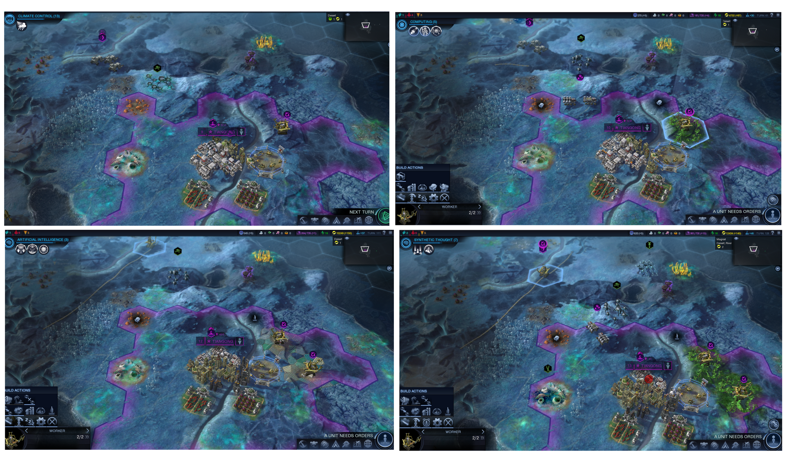

BB-3 running within Sid Meier's Civilization: Beyond Earth
All products, company names, brand names, trademarks, and images are properties of their respective owners. The images are used under Fair Use for educational purposes.
Contents
About BB-3 and this execution
(From the paper): The Busy Beaver game is a game in theoretical computer science. It challenges the player (a Turing machine or a human player) to find a halting Turing machine with a specified number of states \(n\), such that it writes the most number of \(1\)s on the tape out of all possible \(n\)-state Turing machines. The winner is referred to as the \(n^{\text{th}}\) Busy Beaver, or BB\(-n\). To the right you can see a step-by-step depiction of BB-3.
In the paper I show that it is possible to build a universal Turing machine (UTM) within Sid Meier's Civilization: Beyond Earth (Civ:BE), as well as other games.
Below you can see the execution of BB\(-3\) with the \((10, 3)\)-UTM built in Civ:BE. Refer to the paper for a translation of the Turing machine for BB-3 into the “language” of the Civ:BE \((10, 3)\)-UTM, and this page for a description of the components of the UTM. The machine executes \(11\) instructions \(t_1, \dots, t_{11}\) before halting.

Still image (sample states)
Sample frames from the execution, showing the machine at key transitions (clockwise from top-left): \(t_1 = q_00;1Rq_1\), \(t_2 = q_10;1Lq_0\), \(t_{10} = q_01;1Lq_2\), and \(t_{11} = q_21;HALT\).

Full execution (GIF)
Fully animated execution of BB-3 with the Civ:BE \((10, 3)\)-UTM.